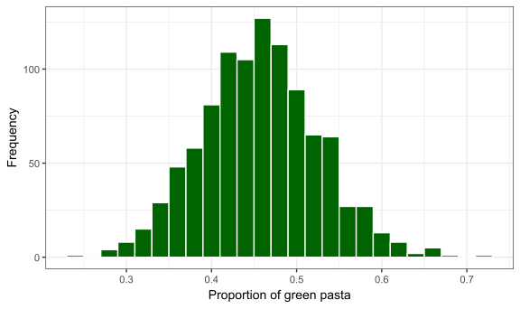
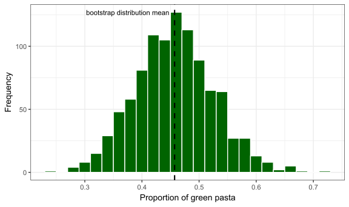
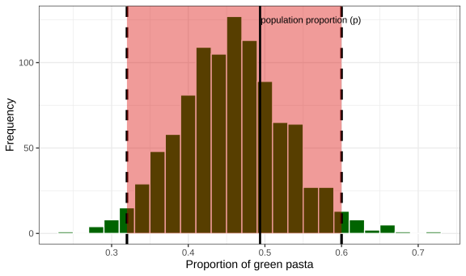
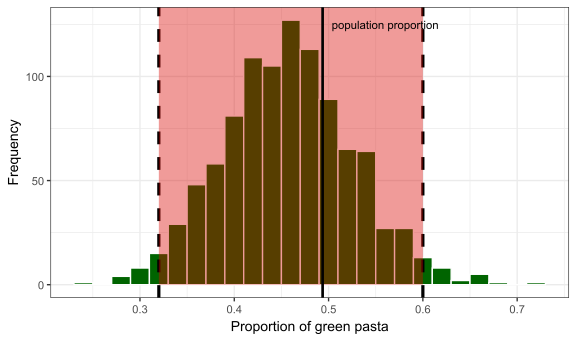
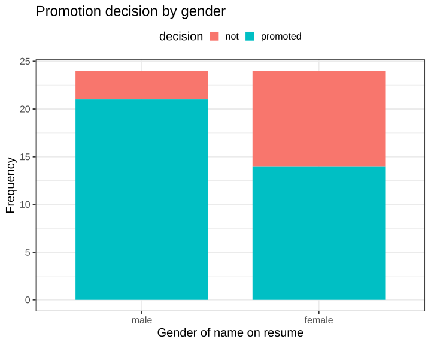
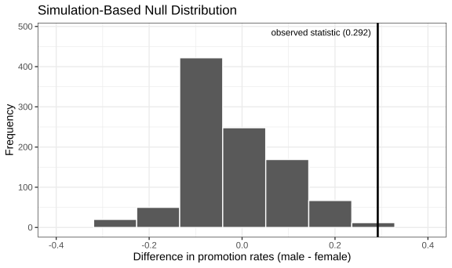
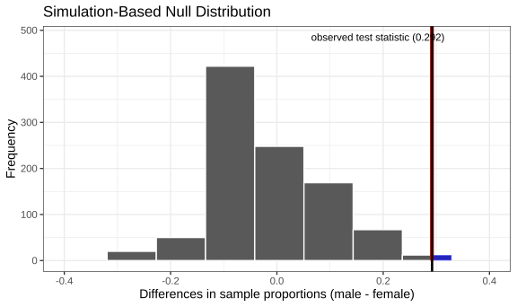
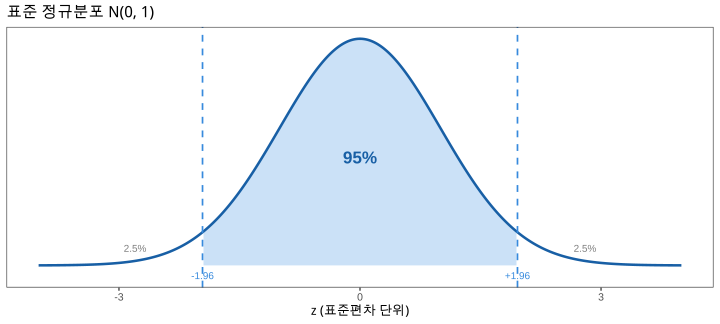
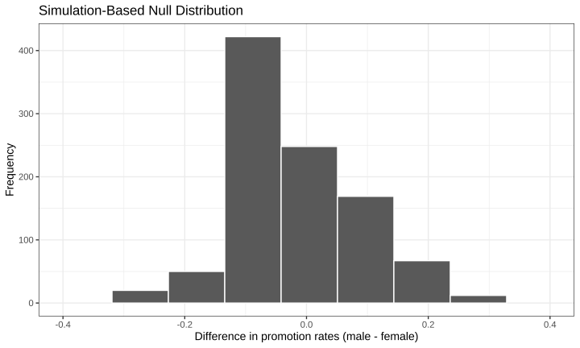

Confidence Intervals and Hypothesis Testing
FMB819: R을 이용한 데이터분석
Today’s Agenda
Part 1 — 신뢰 구간 (Confidence Intervals)
- 점 추정치의 한계: 왜 범위가 필요한가?
- 부트스트랩(Bootstrap)을 이용한 신뢰 구간 구축
- 신뢰 구간의 정확한 해석
Part 2 — 가설 검정 (Hypothesis Testing)
- 귀무가설과 대립가설
- 순열 검정(Permutation Test)을 이용한 귀무분포 생성
- p-값과 유의수준: 언제 귀무가설을 기각하는가?
- 검정 오류(Type I / II Error)
핵심 질문: 표본에서 얻은 숫자를 얼마나 믿을 수 있는가? 그리고 두 그룹 간 차이가 “진짜” 차이인가?
표본이 하나뿐이라면?
지난 시간: 표본을 1,000번 반복 추출하여 표본 분포를 시뮬레이션했음.
현실: 모집단에서 단 하나의 표본만 얻을 수 있음. 비용과 시간 때문.
또한, 모집단의 진짜 모수는 알 수 없음.
그렇다면 지난 시간에 한 것은 의미가 없었나?
아니다. 관찰할 수는 없지만 표본 분포는 실제로 존재하며, 우리는 CLT 덕분에 그것이 어떻게 행동하는지 알고 있음.
이제 이 지식을 단 하나의 표본에서 활용하는 방법을 배움.
- 신뢰 구간: 추정값의 불확실성을 범위로 표현
- 가설 검정: “이 차이가 우연인가?”를 확률로 판단
Confidence Intervals
점 추정에서 신뢰 구간으로
지금까지 표본에서 점 추정치만 계산했음: 표본 평균, 표본 비율, 회귀 계수 등.
이 표본 통계량은 표본 변동성 때문에 진짜 모집단 모수와 다를 수 있음.
점 추정치 대신, 모집단 모수에 대한 가능한 값의 범위를 제공할 수 있음.
이것이 바로 신뢰 구간 (Confidence Interval) 이 하는 일.
비유 — 낚시
| 방법 | 도구 | 비유 |
|---|---|---|
| 점 추정 | 작살 | 한 점을 정확히 겨냥 — 맞으면 좋지만 빗나가면 끝 |
| 신뢰 구간 | 그물 | 범위를 감싸서 잡음 — 더 믿을 수 있음 |
여기서 “물고기”는 모집단의 참값 \((p)\)
신뢰 구간 구축 방법
신뢰 구간을 구축하는 두 가지 주요 접근법:
| 방법 | 원리 | 특징 |
|---|---|---|
| 이론적 접근 | CLT + 수학 공식 | R이 기본으로 사용하는 방식 |
| 시뮬레이션 접근 | 부트스트래핑 (Bootstrapping) | 직관적, 가정이 적음 |
- 오늘은 시뮬레이션 접근(부트스트랩) 에 집중하여 개념을 직관적으로 이해.
다시 파스타로: 단 하나의 표본
파스타 그릇에서 단 하나의 랜덤 표본 \((n=50)\) 만 얻을 수 있다고 가정.
단일 표본으로 표본 변동성을 어떻게 분석할 수 있을까?
👉복원추출 (Bootstrap Resampling) 사용!
부트스트랩 아이디어: 표본에서 표본 만들기
핵심 아이디어: 모집단이 없으면, 내 표본을 “모집단처럼” 쓰면 된다.
부트스트랩 표본 추출 절차
- 표본에서 파스타 1개를 무작위 선택 → 색상 기록
- 선택한 파스타를 표본에 다시 넣음 (복원추출)
- 1–2를 반복 → 원래 표본 크기(\(n=50\))와 동일한 새 표본
- 새 표본에서 \(\hat{p}\) 계산
- 이 과정을 1,000번 반복 → 부트스트랩 분포
왜 복원추출인가?
- 복원 없이 뽑으면 항상 같은 표본 → 변동성 없음
- 복원 추출이어야 표본마다 조금씩 다른 \(\hat{p}\)가 생성됨
- 이 변동성이 표본 변동성을 근사함
핵심: 부트스트랩은 “단 하나의 표본”으로 표본 분포를 흉내낸다.
표본 재추출(Resampling)하기
- 하나의 부트스트랩 표본 예시
# A tibble: 8 × 3
# Groups: replicate [1]
replicate pasta_ID color
<int> <int> <fct>
1 1 4 non-green
2 1 41 non-green
3 1 41 non-green
4 1 79 non-green
5 1 79 non-green
6 1 103 non-green
7 1 103 non-green
8 1 103 non-green[1] 50부트스트랩 분포 생성하기
infer 패키지로 부트스트랩 수행
부트스트랩 결과 확인
Response: color (factor)
# A tibble: 6 × 2
replicate stat
<int> <dbl>
1 1 0.44
2 2 0.36
3 3 0.46
4 4 0.46
5 5 0.52
6 6 0.52[1] 10001,000개의 \(\hat{p}\) 값이 생성됨.
이 분포를 시각화하면?
부트스트랩 분포

- 부트스트랩 분포는 표본 분포를 근사하는 역할을 함.
- 분포의 중심은 원래 표본 \(\hat{p}\)에 가깝고, 퍼짐 정도가 추정의 불확실성을 나타냄.
부트스트랩 분포와 평균

- 부트스트랩 분포의 평균은 원래 표본 비율 \(\hat{p} = 0.46\)과 매우 가까움.
- 이제 이 분포에서 중앙 95%의 범위를 신뢰 구간으로 사용하자.
백분위수 방법: 95% 신뢰 구간
- 부트스트랩 분포에서 중앙 95%의 값을 사용하여 신뢰 구간 생성.
- 2.5% 및 97.5% 백분위수를 계산:
- 95% 신뢰 구간: \([0.32,\; 0.6]\)
infer 패키지로 한 번에 계산
95% 신뢰 구간 시각화: 참값 포함 여부

- 붉은 영역이 95% 신뢰 구간. 실제 모집단 비율 \(p\)가 구간 내에 포함됨.
- 항상 포함될까? 다음 슬라이드에서 확인.
신뢰 구간의 올바른 해석

100개의 신뢰 구간 중 약 95개가 실제 모수 \(p\)를 포함함.
신뢰 구간 해석
*해석: 동일한 방법으로 신뢰 구간을 반복 생성하면, 그 중 약 95%가 모집단 모수를 포함**할 것으로 기대된다.
신뢰 구간의 폭에 영향을 주는 요인
| 변화 | 구간 폭 | 이유 |
|---|---|---|
| 신뢰수준 ↑ (95% → 99%) | 넓어짐 | 더 많이 포함해야 하므로 |
| 표본 크기 ↑ | 좁아짐 | 표본 변동성 감소 → \(SE\) 감소 |
신뢰구간에서 가설검정으로
신뢰 구간은 “모집단 모수가 어떤 범위에 있을까?” 라는 질문에 답함.
그런데 경영 현장의 질문은 종종 이런 형태:
- 남성과 여성의 평균 임금 차이가 통계적으로 유의미한가?
- 신제품 출시 후 고객 전환율이 실제로 올랐는가, 아니면 우연인가?
- A안과 B안 중 어느 쪽이 진짜 더 효과적인가?
이런 질문에 답하는 도구: 가설 검정 (Hypothesis Testing)
| 신뢰 구간 | 가설 검정 | |
|---|---|---|
| 질문 | 모수의 범위는? | 이 차이가 우연인가? |
| 결과 | 값의 범위 | 기각 / 기각 불가 |
| 활용 | 추정, 불확실성 정량화 | 의사결정, 차이 검증 |
Hypothesis Testing
은행 승진에서 성차별이 존재하는가?
1974년 Journal of Applied Psychology 연구: 은행 여직원 차별 여부 조사.
48명의 (남성) 관리자에게 동일한 이력서 제공, 지원자 이름만 남성/여성으로 구분.
- 이력서: “지점장 승진 여부를 결정하는 요청 메모” 형식.
검증하고자 하는 가설: 승진에서 성차별이 존재하는가?
실험 데이터: moderndive 패키지의 promotions 데이터셋
이 실험이 중요한 이유
- 이력서 내용이 동일 → 성별 외 다른 변수 통제
- 즉, 승진 결정의 차이는 오직 성별 때문이어야 함
- 오늘날에도 A/B 테스트, 임금 감사 등 동일한 논리 적용
차별의 증거가 있는가?
성별별 승진 결정 집계
# A tibble: 4 × 4
# Groups: gender [2]
gender decision n percentage
<fct> <fct> <int> <dbl>
1 male not 3 12.5
2 male promoted 21 87.5
3 female not 10 41.7
4 female promoted 14 58.3- 남성 승진율: 87.5%, 여성 승진율: 58.3%
- 차이: 29.2%포인트

핵심 질문: 이 29.2%p 차이가 성차별의 증거인가, 아니면 우연히 발생한 것인가?
가상의 세계: 성차별이 없다면?
만약 성차별이 존재하지 않는 세상이라면, 승진 결정은 성별과 완전히 독립적이어야 함.
이를 시뮬레이션하는 방법:
gender변수를 무작위로 섞어 (shuffle) 재할당.
# A tibble: 6 × 4
id decision gender shuffled_gender
<int> <fct> <fct> <fct>
1 1 promoted male female
2 2 promoted male female
3 3 promoted male male
4 4 promoted male female
5 5 promoted male male
6 6 promoted male male # A tibble: 4 × 4
# Groups: gender [2]
gender decision n percentage
<fct> <fct> <int> <dbl>
1 male not 6 25
2 male promoted 18 75
3 female not 7 29.2
4 female promoted 17 70.8- 무작위로 섞은 후 차이: 4.2%포인트 (원래 29.2%p → 대폭 감소)
표본 변동성을 고려해야 한다
“성차별 없는 세계”에서 한 번 섞었을 때 4.2%p가 나왔음.
그런데 다시 섞으면 4.2%p가 또 나올까? 아니면 다른 값?
표본 변동성 때문에 매번 다른 값이 나옴 → 한 번의 결과만으로 판단 불가.
우리가 알아야 할 것:
성차별이 없는 세계에서, “무작위로 섞었을 때 29.2%p 이상의 차이가 나올 가능성”이 얼마나 되는가?
방법: 무작위 재배열을 1,000번 반복 → 각 번마다 차이 계산 → 분포 생성.
- 이것이 귀무분포 (Null Distribution) 임.
가설 검정의 표기법 정의
두 개의 경쟁 가설
- 귀무가설 \(H_0\): 기본 가설. 일반적으로 “차이 없음”, “효과 없음”.
- 대립가설 \(H_A\): 연구자가 주장하는 가설.
승진 실험의 가설
\[H_0: p_m - p_f = 0 \quad \text{(성별 간 승진율 차이 없음)}\] \[H_A: p_m - p_f > 0 \quad \text{(남성의 승진율이 더 높음)}\]
여기서 \(p_m\) = 남성 승진 비율, \(p_f\) = 여성 승진 비율.
- 위의 \(H_A\)는 단측 검정 (one-sided test): 방향이 있음 (\(p_m > p_f\)).
- 양측 검정 (two-sided test): \(H_A: p_m - p_f \neq 0\) (방향 무관, 차이만 검정).
핵심 용어 정의
| 용어 | 정의 | 이 예시에서 |
|---|---|---|
| 검정 통계량 (Test statistic) | 가설 검정에 사용되는 표본 통계량 | \(\hat{p}_m - \hat{p}_f\) |
| 관측된 검정 통계량 (Observed test statistic) | 실제 데이터에서 관측된 값 | \(0.292\) (29.2%p) |
| 귀무분포 (Null distribution) | \(H_0\)이 참일 때 검정 통계량의 분포 | 1,000번 섞어서 얻은 차이의 분포 |
| p-값 (p-value) | \(H_0\)이 참일 때, 관측값만큼 극단적인 값이 나올 확률 | 아래에서 계산 |
| 유의수준 (Significance level, \(\alpha\)) | 귀무가설 기각의 컷오프 기준 | 통상 0.05 |
귀무분포 생성: 1,000번의 무작위 재배열

- 분포의 중심은 0 근처: 성차별이 없으면 차이가 0에 가까워야 함.
- 실제 관측값 0.292는 분포의 오른쪽 끝에 위치 → 매우 드문 값.
p-값 시각화

- 파란 영역 = p-값: \(H_0\) 하에서 0.292 이상의 차이가 나올 확률.
p-값 계산 및 의사 결정
p-값: \(H_0\)이 참일 때, 관측된 검정 통계량과 같거나 더 극단적인 값을 관측할 확률.
- 성차별이 없는 세계에서 \(\hat{p}_m - \hat{p}_f \geq 0.292\) 일 확률: 0.7%
의사 결정 (유의수준 \(\alpha = 0.05\))
| 비교 | 판단 |
|---|---|
| p-값 \((0.007)\) \(<\) \(\alpha\) \((0.05)\) | \(H_0\) 기각 |
| 해석 | 29.2%p 차이는 우연이 아닐 가능성이 높음 → 성차별의 통계적 증거 존재 |
만약 \(\alpha = 0.01\)로 설정했다면? p-값이 0.01보다 작은지 확인 후 동일하게 판단.
검정 오류 (Testing Errors)
- 확률을 다루기 때문에 오류를 피할 수 없음.
- 0.292의 차이는 \(H_0\) 하에서 드물지만 불가능하지는 않음.

제1종 오류 (Type I Error)
\(H_0\)이 참인데 기각 → False Positive
예: 실제로 차별이 없는데 “있다”고 결론
유의수준 \(\alpha\)로 제어: \(\alpha = 0.05\)이면
5% 이하의 확률로만 이 오류를 범함.
제2종 오류 (Type II Error)
\(H_0\)이 거짓인데 기각 못함 → False Negative
예: 실제 차별이 있는데 “없다”고 결론
통계적 추론과 회귀 분석의 연결
지금까지 배운 신뢰 구간·가설 검정 = 통계적 추론 (Statistical Inference)의 핵심 도구.
회귀 분석도 표본 데이터를 기반으로 하므로, 동일한 논리가 적용됨:
| 회귀 분석 출력값 | 통계적 추론 연결 |
|---|---|
| 회귀 계수 \(\hat{\beta}_1\) | 점 추정량 — 표본 변동성에 영향받음 |
| 표준 오차 (Std. Error) | \(\hat{\beta}_1\)의 표준 오차 (\(SE\)) |
| t-값 (t-statistic) | 검정 통계량: \(t = \hat{\beta}_1 / SE\) |
| p-값 (Pr(>|t|)) | \(H_0: \beta_1 = 0\) 하에서의 p-값 |
| 95% 신뢰 구간 | \(\hat{\beta}_1 \pm 1.96 \times SE\) |
핵심: 회귀 계수가 “유의미하다” = p-값 \(< \alpha\) = 해당 변수가 결과에 실제 영향을 미칠 가능성이 높음.
95% 신뢰 구간 공식: 1.96은 어디서 왔는가?
3단계 논리 흐름
① CLT 적용
표본이 충분히 크면, \(\hat{\beta}_1\)은 정규 분포를 따름:
\[\hat{\beta}_1 \approx N\!\left(\beta_1,\; SE^2\right)\]
② 표준화 (z-변환)
\[z = \frac{\hat{\beta}_1 - \beta_1}{SE} \approx N(0,\, 1)\]
③ 1.96의 출처
표준 정규분포의 성질:
\[P(-1.96 \leq z \leq +1.96) = 0.95\]
이를 \(\beta_1\)에 대해 풀면:
\[\therefore\quad \hat{\beta}_1 \pm 1.96 \times SE\]

신뢰수준별 z-값
| 신뢰수준 | z-값 | 구간 폭 |
|---|---|---|
| 90% | ±1.645 | 좁음 — 덜 보수적 |
| 95% | ±1.96 | 통상 사용 기준 |
| 99% | ±2.576 | 넓음 — 더 보수적 |
회귀 출력에서 신뢰 구간 읽기
2.5 % 97.5 %
(Intercept) 33.450500 41.119753
wt -6.486308 -4.202635confint()가 반환하는 구간 = \(\hat{\beta}_1 \pm 1.96 \times SE\) (이론적 공식)- 회귀 출력의
Std. Error× 1.96 = CI 반폭 (half-width)
핵심: 회귀 계수가 “유의미하다” (\(p < 0.05\)) ⟺ 95% CI가 0을 포함하지 않는다.
THE END!
Appendix: infer 파이프라인 전체 코드
# 귀무분포 생성
null_distribution <- promotions %>%
# 변수와 성공 기준 지정
specify(formula = decision ~ gender,
success = "promoted") %>%
# 귀무가설: 성별과 승진 독립
hypothesize(null = "independence") %>%
# 1,000번 무작위 재배열
generate(reps = 1000, type = "permute") %>%
# 각 재배열에서 p_m - p_f 계산
calculate(stat = "diff in props",
order = c("male", "female"))
# 귀무분포 시각화
visualize(null_distribution,
bins = 10,
fill = "#d90502") +
labs(x = "Difference in promotion rates (male - female)",
y = "Frequency") +
xlim(-0.4, 0.4) +
theme_bw(base_size = 14)